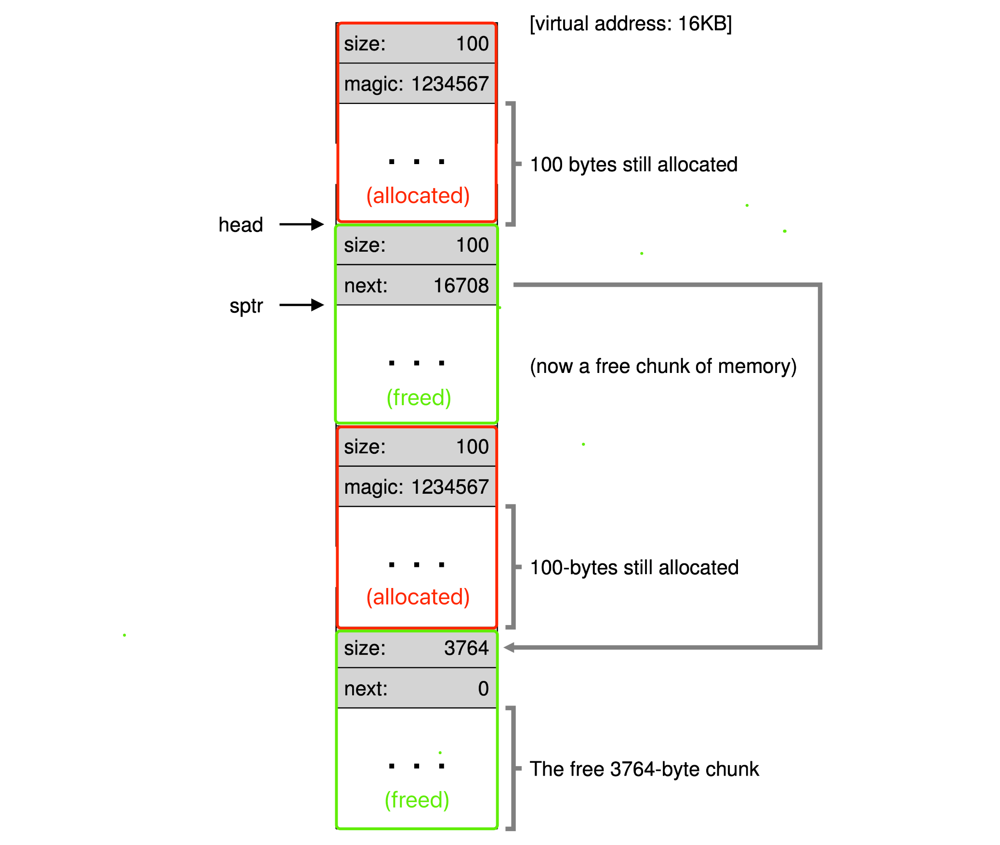

《Operating Systems: Three Easy Pieces》读书笔记（第 14-20 章）
书接上回，本文是第 14-20 章的笔记。内容基于自身情况记录，仅供参考，Dialogue 的相关章节已略过。
Chapter 14: Interlude - Memory API
- Memory types:
- Stack memory (automatic memory): allocations and deallocations are managed implicitly by the compiler.
- Heap memory: allocations and deallocations are explicitly handled by programmers.
#include <stdio.h>
int main(void) {
int x[10];
printf("%d\n", sizeof(x)); // 40.
return 0;
}
- Common errors when using malloc() and free():
- Forgetting to allocate memory.
- Not allocating enough memory.
- Forgetting to initialize allocated memory.
- Forgetting to free memory.
- Freeing memory before you are done with it.
- Freeing memory repeatedly.
- Calling
free()incorrectly.
- Memory check tools: purify, valgrind.
- Memory system calls:
- free():
brk(),sbrk(). - malloc():
mmap().
- NULL in C:
#define NULL 0
// or.
#define NULL (void*) 0
Chapter 15: Mechanism - Address Translation
- Hardware-based address translation: virtual address -> physical address.
- base-and-bounds (aka “dynamic relocation”): base register + bounds (limit) register (may hold the size of the address space, or the physical address of the end of the address space), are all on the MMU chip. This approach has the drawback of internal fragmentation, which could be optimized via segmentation.
- Basic steps:
- Step 1: physical address = virtual address + base register (offset).
- Step 2: check the final physical address or virtual address against the bounds register to see whether the address is illegal.
- Dynamic relocation: hardware requirements:
- Dynamic relocation: operating system responsibilities:
- Limited direct execution with dynamic memory relocation:
- Boot:
- Runtime:
Chapter 16: Segmentation
- Segmentation: a segment is just a contiguous portion of the address space of a particular length, it allows the OS to place each one of those segments in different parts of physical memory, and thus avoid filling physical memory with unused virtual address space.
- Each segment of the VAS has a base and bound registers pair (multiple).
- The hardware uses segment registers during translation.
- Segment register values (with protection):
- Segment: use the first several bits to determine the segement registers.
- Base: the value of base register.
- Size: the value of bound register.
- Grows Positive: specify the growing direction of the segment in memory.
- Protection: for supporting sharing between different VAS.
- Coarse-grained and fine-grained segmentation:
- Coarse-grained: only has a few segments (i.e., code, stack, heap).
- Fine-grained: allowed for address spaces to consist of a large number of smaller segments with the help of segement table. The OS could better learn about which segments are in use and which are not and thus utilize main memory more effectively.
- Potential issues of segmentation:
- What should the OS do on a context switch?
- The segment registers must be saved and restored, for example in TSS.
- Each segment might be a different size which may incur the issue of external fragmentation (physical memory becomes full of little holes of free space, making it difficult to allocate new segments, or to grow existing ones).
- Solved by rearranging the existing segments (costly).
- Solved by using better memory management algorithms (best-fit, worst-fit, first-fit, buddy, etc).
- Solved by paging.
- Internal fragmentation: if an allocator hands out chunks of memory bigger than that requested, any unasked for (and thus unused) space in such a chunk is considered internal fragmentation.
Chapter 17: Free-Space Management
- Free-list: contains references to all of the free chunks of space in the managed region of memory.

- Splitting: find a free chunk of memory that can satisfy the request and split it into two.
- Coalescing: merge the nearby chunks of free space into a single larger free chunk.
- The header structure for allocated block:
typedef struct {
int size;
int magic; // For sanity check, making sure the freed chunk is legal.
} header_t;
- The node structure of the free-list:
typedef struct __node_t {
int size;
struct __node_t *next;
} node_t;
- Memory allocation strategies:
- Best fit: find the smallest fit.
- Pros: try to reduce wasted space.
- Cons: heavy performance penalty (exhaustive search).
- Worst fit (performs badly): find the largest chunk and return the requested amount.
- Pros: leave big chunks free instead of lots of small chunks.
- Cons: heavy performance penalty (exhaustive search).
- First fit: find the first block that is big enough and returns the requested amount.
- Pros: fast.
- Cons: sometimes pollutes the beginning of the free list with small objects, this can be reduced by using address-based ordering which keeps the list ordered by the address of the free space.
- Next fit: keep an extra pointer to the location within the list where one was looking last.
- Pros: fast, but not better than “First Fit”.
- Cons: (similar to “First Fit”).
- Advanced memory allocation strategies:
- Segregated lists: if a particular application has one (or a few) popular-sized request that it makes, keep a separate list just to manage objects of that size, all other requests are forwarded to a more general memory allocator.
- Buddy allocation: in such a system, free memory is first conceptually thought of as one big space of size 2N. When a request for memory is made, the search for free space recursively divides free space by two until a block that is big enough to accommodate the request is found. *The address of each buddy pair only differs by a single bit, which bit is determined by the level(order) in the buddy tree. Typically the buddy memory allocation system is implemented with the use of a binary tree to represent used or unused split memory blocks. The address of a block’s “buddy” is equal to the bitwise exclusive OR (XOR) of the block’s address and the block’s size.
Searching for a 7KB block with buddy allocation
- Other data structures for managing space: binary trees, splay trees, or partially-ordered trees.
Chapter 18: Paging - Introduction
- Page table: a per-process data structure (except for the inverted page table), storing the address translations for each of the virtual pages of the address space. Dividing virtual address space into fixed-sized units, each of which we call a page.
- VPN: Virtual page number.
- PFN (PPN): Physical frame number.
- PTE: Page table entry.
- P: present bit, indicating whether this page is in physical memory or on disk.
- R/W: read/write bit (R/W) which determines if writes are allowed to this page.
- U/S: user/supervisor bit, which determines if user-mode processes can access the page.
- PWT, PCD, PAT, G: determine how hardware caching works for these pages.
- A: accessed bit, tracking whether a page has been accessed, and is useful in determining which pages are popular and thus should be kept in memory.
- D: dirty bit, indicating whether the page has been modified since it was brought into memory.
- PTBR (page-table-base-register): which contains the physical address of the starting location of the page table.
// The pseudo-code for "movl 21, %eax".
// Extract the VPN from the virtual address.
VPN = (VirtualAddress & VPN_MASK) >> SHIFT
// Form the address of the page-table entry (PTE).
PTEAddr = PTBR + (VPN * sizeof(PTE))
// Fetch the PTE.
PTE = AccessMemory(PTEAddr)
// Check if process can access the page.
if (PTE.Valid == False)
RaiseException(SEGMENTATION_FAULT)
else if (CanAccess(PTE.ProtectBits) == False)
RaiseException(PROTECTION_FAULT)
else
// Access is OK: form physical address and fetch it.
offset = VirtualAddress & OFFSET_MASK
PhysAddr = (PTE.PFN << PFN_SHIFT) | offset
Register = AccessMemory(PhysAddr)
- The issues need to be solved of paging:
- The overhead of the intense access to page table - solved by TLB.
- The memory waste of page tables (per process) - solved by multi-level page table.
Chapter 19: Paging - Faster Translations (TLBs)
- TLB (translation-lookaside buffer): is a part of the chip’s MMU, a hardware cache of popular virtual-to-physical address translations. The TLB improves performance due to spatial locality (the elements of the array are packed tightly into pages (i.e., they are close to one another in space), and thus only the first access to an element on a page yields a TLB miss).
- Hardware-managed TLB is usually designed for CISC (.e.g X86, the hardware would simply walk the page table via cr3 and update TLB, then retry the instruction), and the software-managed TLB is for RISC, it transfers the TLB miss signal via a trap (the “return-from-trap” should resume the instruction which caused the miss). The software-managed way is more flexible to OS and simple for hardware to achieve.
- The access to TLB miss-handling code could be handled by some pre-reserved, permanently-valid TLB entries, these translations always hit in the TLB.
- TLB is fully associative, this means that any given translation can be anywhere in the TLB, and that the hardware will search the entire TLB in parallel to find the desired translation.
- The TLB must be kept in sync with the page table. When a page in physical memory is replaced, its TLB entry, if there is one for it, must be invalidated. Update the TLB entry for the page being replaced to contain the virtual-to-physical mapping for the new page being loaded in.
- When context-siwtching:
- Setting all TLB entries to invalid, or:
- Identifying process by the ASID in each TLB entry.
// Hardware logic:
VPN = (VirtualAddress & VPN_MASK) >> SHIFT
(Success, TlbEntry) = TLB_Lookup(VPN)
if (Success == True) // TLB Hit.
if (CanAccess(TlbEntry.ProtectBits) == True)
Offset = VirtualAddress & OFFSET_MASK
PhysAddr = (TlbEntry.PFN << SHIFT) | Offset
Register = AccessMemory(PhysAddr)
else
RaiseException(PROTECTION_FAULT)
else // TLB Miss.
// RaiseException(TLB_MISS) // For RISC, simply trap to the OS when a TLB miss.
PTEAddr = PTBR + (VPN * sizeof(PTE))
PTE = AccessMemory(PTEAddr)
if (PTE.Valid == False)
RaiseException(SEGMENTATION_FAULT)
else if (CanAccess(PTE.ProtectBits) == False)
RaiseException(PROTECTION_FAULT)
else
TLB_Insert(VPN, PTE.PFN, PTE.ProtectBits)
RetryInstruction()
- TLB contents:
- valid: indicate if the entry has been set.
- prot: protection bits.
- ASID: address space identifier, shorter than PID, used for differentiating the process this entry is valid for.
- G: Global bit, used for pages that are globally-shared among processes (ASID will be ignored).
- C: Coherence bit, determines how a page is cached by the hardware.
- D: Dirty bit, is marked when the page has been written to.
- V: Valid bit, tells the hardware if there is a valid translation present in the entry.
- page mask: supports multiple page sizes.
A wired register can be set by the OS to tell the hardware how many slots of the TLB to reserve for the OS; the OS uses these reserved mappings for code and data that it wants to access during critical times, where a TLB miss would be problematic.
- TLB replacement policies:
- LRU (Least-recently-used): a common approach, but not good for some corner-case, like: a program loops over “n + 1” pages with a TLB of size “n”.
- Random: simple.
- TLB issues:
- TLB coverage: if the number of pages a program accesses in a short period of time exceeds the number of pages that fit into the TLB, the program will generate a large number of TLB misses.
- Cache:
- Physically-indexed cache: a address translation (virtual -> physical) has to take place before the cache is accessed which the TLB would be the bottleneck.
- Virtually-indexed cache: the cache could be indexed direclty with virtual address but requires complex hardware design.
Chapter 20: Paging - Smaller Tables
- Bigger page size will lead to internal fragmentation, so, most systems use relatively small page sizes in the common case: 4KB (as in x86) or 8KB (as in SPARCv9).
- Multiple page sizes: many architectures (e.g., MIPS, SPARC, x86-64) now support multiple page sizes, a single large page (e.g., of size 4MB) can be used for a specific portion of the address space, enabling such applications to place a frequently-used (and large) data structure in such a space while consuming only a single TLB entry (it is to reduce pressure on the TLB).
- Paging with segments: one page table per logical segment (.e.g code, heap, stack, and etc), the base register holds the value of the “base” physical address of each page table, and bounds register holds the value of the maximum valid page in the segment. But segmentation is not quite flexible, and this way could also cause external fragmentation.
SN = (VirtualAddress & SEG_MASK) >> SN_SHIFT
VPN = (VirtualAddress & VPN_MASK) >> VPN_SHIFT
// Use one of three segment base registers instead of PTBR to get the base physical address.
AddressOfPTE = Base[SN] + (VPN * sizeof(PTE))
- Multi-level page tables: it turns the linear page table into something like a tree. It only allocates page-table space in proportion to the amount of address space you are using; thus it is generally compact and supports sparse address spaces.
- The goal is to make every piece of the multi-level page table fit into a page vanishes.
- The memory of the page tables could be swapped to disk when memory pressure gets a little tight (kernel virtual memory).
- The VPN could be splitted into several parts corresponding to different level of page directory.
- Inverted page tables: instead of having many page tables (one per process of the system), we keep a single page table that has an entry for each physical page of the system. The entry tells us which process is using this page, and which virtual page of that process maps to this physical page (PowerPC).
评论 | Comments